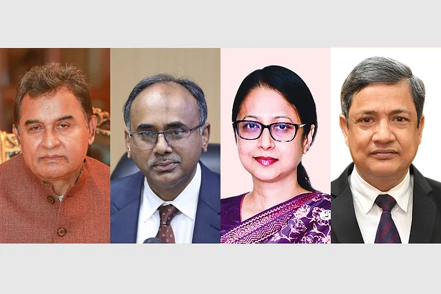
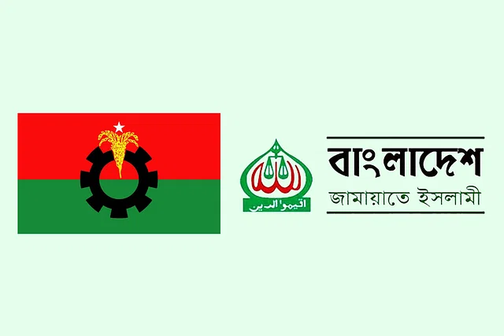
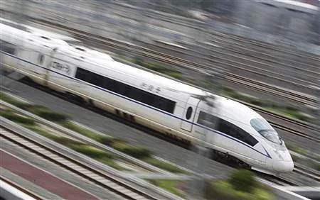

Post-1
অর্থমন্ত্রী অনিয়মিত, দেখা দেন না গভর্নর, অর্থসচিব ও এনবিআর চেয়ারম্যান
মোহাম্মদ ওসমান
প্রকাশ: ২৩ আগস্ট ২০২৩, ১০: ০০

অর্থনীতির সংকট কাটছে না। ডলারের দর এখনো অনেক বেশি। সরকারের হিসাবেই মূল্যস্ফীতি কমেছে অতি সামান্য, বৈদেশিক মুদ্রার মজুতের পতনও ঠেকানো যাচ্ছে না। অথচ বিশ্বব্যাপী অর্থনৈতিক সংকট আগের তুলনায় অনেকটা কমেছে। অনেক দেশ মূল্যস্ফীতি কমাতে সফল হচ্ছে। কিন্তু সিদ্ধান্ত গ্রহণে বিলম্ব, নীতির সমন্বয়হীনতা, মনিটরিংয়ের অভাব, আন্তমন্ত্রণালয় সমন্বয় না থাকা, অতিমাত্রায় আমলাতান্ত্রিক নির্ভরতা এবং জবাবদিহির অভাবের কারণেই বাংলাদেশ সংকট থেকে বের হতে পারছে না। ফলে মূল্যস্ফীতির চাপে দিশাহারা মানুষ ও একটি দুর্বল অর্থনীতির ভিত্তি নিয়েই বাংলাদেশ নতুন আরেকটি নির্বাচনের দিকে যাচ্ছে। বিশ্ব অর্থনীতির এ রকম এক সংকটের সময় সারা বিশ্বেই অর্থনীতিসংক্রান্ত নীতিনির্ধারকেরা আছেন চালকের আসনে। অথচ বাংলাদেশে অর্থনীতি বিষয়ের নীতিনির্ধারকদের দেখাই পাচ্ছেন না সংশ্লিষ্ট ব্যক্তিরা। অর্থমন্ত্রী নিয়মিত কার্যালয়ে আসেন না। অর্থসচিব কারও সঙ্গে কথা বলেন না। বাংলাদেশ ব্যাংকের গভর্নরের সঙ্গেও দেখা পাওয়া দুষ্কর। জাতীয় রাজস্ব বোর্ডের (এনবিআর) চেয়ারম্যান কোনো অনুষ্ঠানেই যান না। এসব নীতিনির্ধারকের সঙ্গে বেসরকারি খাতের উদ্যোক্তা, গবেষক বা অর্থনীতিবিদ—কারও সঙ্গে কোনো যোগাযোগ নেই। তাঁরা কারও পরামর্শও নেন না। এতেই দেখা দিয়েছে নানা ধরনের সমন্বয়হীনতা। এর ফল ভোগ করছে দেশের সাধারণ মানুষ। see more...
Post-2
বিএনপি–জামায়াত: টানাপোড়েন কমলেও যুগপৎ কর্মসূচিতে এখনই নয়
মোহাম্মদ ওসমান
প্রকাশ: ২৩ আগস্ট ২০২৩, ১০: ০০

দেলাওয়ার হোসাইন সাঈদীর মৃত্যুতে দলীয়ভাবে শোক প্রকাশের মধ্য দিয়ে বিএনপির সঙ্গে জামায়াতে ইসলামীর দূরত্ব কিছুটা কমেছে। তবে নির্বাচন সামনে রেখে সরকারবিরোধী আন্দোলনে জামায়াতকে এড়িয়ে চলার যে কৌশল নিয়ে বিএনপি এগোচ্ছিল, এখনো সে অবস্থানেই আছে দলটি। আবার জামায়াতও নিজেদের মতো করে আন্দোলন-কর্মসূচি করছে। তবে সাঈদীর মৃত্যুর পর নতুন করে তৈরি হওয়া প্রেক্ষাপটে বিএনপি ও জামায়াতের সম্পর্ক আবার রাজপথে গড়াবে কি না, তা এখনো নিশ্চিত নয়। দল দুটির দায়িত্বশীল সূত্রগুলো বলছে, এ বিষয়ে তাদের মধ্যে কোনো বৈঠক বা আলোচনা হয়নি। ফলে সরকারবিরোধী যুগপৎ আন্দোলনে জামায়াত যুক্ত হবে কি না, সেটি স্পষ্ট নয়। যদিও বিএনপি ও জামায়াত—দুটি দলেরই আন্দোলনের লক্ষ্য ক্ষমতাসীন আওয়ামী লীগ সরকারের পতন ঘটানো। কিন্তু রাজনীতির নানা হিসাব-নিকাশে এবার সরকারবিরোধী আন্দোলনে জামায়াতকে এড়িয়ে চলছে বিএনপি। এরই অংশ হিসেবে ২০-দলীয় জোট ভেঙে দেওয়া হয়। এই জোট ভেঙে নতুন একাধিক জোট হলেও সেসব জোটে নেই জামায়াত। see more...
Post-3
বুলেট ট্রেনের খোঁজ নেই, বৃত্তাকার রেলে ‘অপচয়’
মোহাম্মদ ওসমান
প্রকাশ: ২৩ আগস্ট ২০২৩, ১০: ০০

ঢাকা-চট্টগ্রাম রেলপথে বুলেট ট্রেন চালুর লক্ষ্য নিয়ে ২০১৮ সালে সম্ভাব্যতা যাচাই সমীক্ষা শুরু করে বাংলাদেশ রেলওয়ে। এ জন্য ব্যয় হয় প্রায় ১০০ কোটি টাকা। কিন্তু প্রকল্পটি আর আলোর মুখ দেখেনি। বুলেট ট্রেনের মতো বৈদ্যুতিক ট্রেন, বৃত্তাকার ট্রেনসহ নানা প্রকল্পের সম্ভাব্যতা যাচাইয়ে বড় অঙ্কের অর্থ ব্যয় করেছে রেলওয়ে। মানুষকে দ্রুতগতির ট্রেনে চলাচলের স্বপ্ন দেখানো হয়েছে। কিন্তু প্রকল্প আর নেওয়া হয়নি। ২০০৯ সালে আওয়ামী লীগ সরকার দায়িত্ব নেওয়ার পর থেকে ২০টি সম্ভাব্যতা যাচাই সমীক্ষা ও কারিগরি সহায়তা প্রকল্পের খোঁজ পাওয়া গেছে, যেগুলোর পেছনে ব্যয় হয়েছে ৮৩৯ কোটি টাকা। কিন্তু সম্ভাব্যতা যাচাই সমীক্ষাগুলো শেষ করে প্রকল্প নেওয়া হয়নি। যদিও সম্ভাব্যতা যাচাই সমীক্ষায় সব কটি প্রকল্পই বাস্তবায়নযোগ্য এবং অর্থনৈতিকভাবে লাভজনক বলে দেখানো হয়েছিল। আর কারিগরি সহায়তা প্রকল্পের ব্যয় নিয়ে প্রশ্ন রয়েছে। see more...